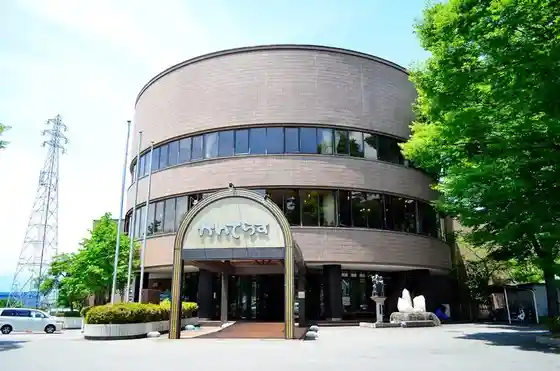
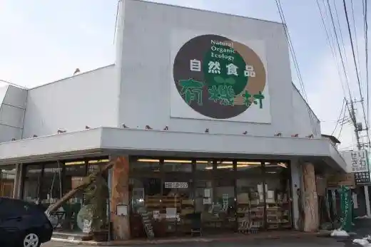

Yamanashi Wain Okoku
Kofushi, Yamanashi · 055-287-3030 · Official / source link
Yamanashi Prefectural Library
Kofushi, Yamanashi · 055-255-1040 · Official / source link
Kaiterasu (Yamanashiken Jibasangyo Center)
Kofushi, Yamanashi · 055-237-1641 · Official / source link

Budo no Hayakawa Sono
Kofushi, Yamanashi · 055-233-5495 · Official / source link

Nature Shokuhin Yuki Village
Kofushi, Yamanashi · 055-222-1872 · Official / source link

Dei Kinue Noen 10 Ban
Kofushi, Yamanashi · Official / source link
Ichigo Kan Kubota
Kofushi, Yamanashi · 055-243-3653 · Official / source link
Takeda no Mori Hoken Kyuyo Hayashi Choju Center
Kofushi, Yamanashi · 055-252-9161 · Official / source link
Tozawa Yuran Budo Sono
Kofushi, Yamanashi · 055-232-3584 · Official / source link
Oizumi Tera
Kofushi, Yamanashi · 055-253-2518 · Official / source link
Maizuru Shiro Park
Kofushi, Yamanashi · 055-227-6179 · Official / source link
Yamanashi Chugin Kinyu Museum
Kofushi, Yamanashi · 055-223-3090 · Official / source link
Kanazakura Shrine
Kofushi, Yamanashi · 055-287-2011 · Official / source link
Takeda Shrine
Kofushi, Yamanashi · 055-252-2609 · Official / source link
Dokata Yoran Ichigo Sono
Kofushi, Yamanashi · 055-241-3063 · Official / source link
Kofushi Rekishi Park / Yamate Mikado
Kofushi, Yamanashi · 055-237-5702 · Official / source link
Yu Village no Mori Takenaka Eitaro Memorial Museum
Kofushi, Yamanashi · 055-252-5560 · Official / source link
Yu Village Yama
Kofushi, Yamanashi · 055-298-4837 · Official / source link
Kurisutaru Museum
Kofushi, Yamanashi · 055-228-7003 · Official / source link
Taiyo to Daichi no Megumi 8 Ban Ishihara Nojo
Kofushi, Yamanashi · 090-4931-5596 · Official / source link
Kanko Ichigo Yamashiro Sono 3 Ban
Kofushi, Yamanashi · 055-243-1535 · Official / source link
Yamanashi Prefectural Art Museum
Kofushi, Yamanashi · 055-228-3322 · Official / source link
Geijutsu no Mori Park
Kofushi, Yamanashi · 055-235-8080 · Official / source link
Sosaku no Mori Obina
Kofushi, Yamanashi · 055-242-8660 · Official / source link
Kai Zenkoji
Kofushi, Yamanashi · 055-233-7570 · Official / source link
Wada Toge Miharashi Plaza
Kofushi, Yamanashi · 055-224-1667 · Official / source link
Fuji no Kuni Yamanashi no Village Kyuka Mura
Kofushi, Yamanashi · 055-231-2722 · Official / source link
Yamanashiken Sone Kyuryo Park (Fudoki no Oka)
Kofushi, Yamanashi · 055-266-5854 · Official / source link
Wada Toge
Kofushi, Yamanashi · 055-237-5702 · Official / source link
Yamanashi Prefectural Science Museum
Kofushi, Yamanashi · 055-254-8151 · Official / source link
Yamanashi Heiwa Museum Ishibashi Tanzan Memorial Museum
Kofushi, Yamanashi · 055-235-5659 · Official / source link
Kofushi Fuji Village Memorial Museum
Kofushi, Yamanashi · 055-252-2762 · Official / source link
Atago Yama Kodomo no Kuni
Kofushi, Yamanashi · 055-253-5933 · Official / source link
Koin Tera
Kofushi, Yamanashi · 055-252-8655 · Official / source link
Oze Supotsu Park
Kofushi, Yamanashi · 055-243-3111 · Official / source link
Takeda no Mori
Kofushi, Yamanashi · 055-251-8551 · Official / source link
Yamanashi Prefectural Koko Museum
Kofushi, Yamanashi · 055-266-3881 · Official / source link
Kamikuishiki Nosambutsu Chokubai Tokoro
Kofushi, Yamanashi · 0555-88-2138 · Official / source link
Fudoki no Oka Nosambutsu Chokubai Tokoro
Kofushi, Yamanashi · 055-266-3858 · Official / source link
Yamanashi Juerii Museum
Kofushi, Yamanashi · 055-223-1570 · Official / source link
Yamanashiken Gokoku Shrine
Kofushi, Yamanashi · 055-252-6371 · Official / source link
Zeshiki
Kofushi, Yamanashi · 055-288-1597 · Official / source link
Yamanashi Prefectural Sangyo Tenji Koryu Kan (Aimesse Yamanashi)
Kofushi, Yamanashi · 055-243-1811 · Official / source link
Hotaru Village (Kofushi)
Kofushi, Yamanashi · 055-237-5702 · Official / source link
Kuramoto Izakaya Tani Sakura
Kofushi, Yamanashi · 055-225-3213 · Official / source link
no Izumi Mizumi / Arakawa Dam
Kofushi, Yamanashi · 055-287-2006 · Official / source link
Yamasuso (Ko no Michi) Viewpoint Plaza
Kofushi, Yamanashi · 055-237-5702 · Official / source link
Kofushi Yakusho Tembo Robii
Kofushi, Yamanashi · 055-237-5197 · Official / source link
Inden Museum
Kofushi, Yamanashi · 055-220-1621 · Official / source link
Tama Sho Shrine
Kofushi, Yamanashi · 055-237-5702 · Official / source link
Keiun In
Kofushi, Yamanashi · 055-237-5702 · Official / source link
Sakaori Miya
Kofushi, Yamanashi · 055-231-2690 · Official / source link
Yoshinari Tera
Kofushi, Yamanashi · 055-233-9396 · Official / source link
Kuro Fuji
Kofushi, Yamanashi · 055-298-4837 · Official / source link
Takedashingen Ko Zo
Kofushi, Yamanashi · 055-237-5702 · Official / source link
JA Yamanashi Mirai Kaku Retate Land Ikeda
Kofushi, Yamanashi · 055-228-4255 · Official / source link
Kaiya
Kofushi, Yamanashi · 055-266-5181 · Official / source link
Rakkii Shokai
Kofushi, Yamanashi · 055-237-7272 · Official / source link
Yamanashi Prefectural Literature Museum
Kofushi, Yamanashi · 055-235-8080 · Official / source link
Nakaku Haisui Ba Cherry Blossoms
Kofushi, Yamanashi · 055-228-3317 · Official / source link
Ashi Kawa Gorge
Kofushi, Yamanashi · 0555-88-2111 · Official / source link
Shiozawa Tera
Kofushi, Yamanashi · 055-252-8556 · Official / source link
Maizuru Shiro Koen Tenshu Dai
Kofushi, Yamanashi · 055-227-6179 · Official / source link
Takeda no Mori Chushajo Tembo Plaza
Kofushi, Yamanashi · 055-251-8551 · Official / source link
Ana Setsu Dai Shrine
Kofushi, Yamanashi · 055-222-3852 · Official / source link
Ontake Shosenkyo
Kofushi, Yamanashi · 055-287-2158 · Official / source link
Takeda Jinja Shuhen Cherry Blossoms
Kofushi, Yamanashi · 055-237-5702 · Official / source link
Domenu Kyu
Kofushi, Yamanashi · 055-233-4427 · Official / source link
Shingen Wain
Kofushi, Yamanashi · 055-233-2579 · Official / source link
Shato Sakaori Wainarii
Kofushi, Yamanashi · 055-227-0511 · Official / source link
Sadoya
Kofushi, Yamanashi · 055-251-3671 · Official / source link
Ichigo Kari (Kofushi)
Kofushi, Yamanashi · 055-243-9608 · Official / source link
Fufu Ki Shrine
Kofushi, Yamanashi · 0552-87-2020 · Official / source link
Kobayashi Farm
Kofushi, Yamanashi · 055-241-5128 · Official / source link
Ishihara Tourist Farm 5 Ban
Kofushi, Yamanashi · 090-4942-6934 · Official / source link
Sutoroberii Farm Ishihara
Kofushi, Yamanashi · 055-241-2809 · Official / source link
Suzuki Noen 2 Ban
Kofushi, Yamanashi · 090-5323-2991 · Official / source link
Masuda Ho Ichigo Sono 12 Ban
Kofushi, Yamanashi · 090-3478-7619 · Official / source link
17 Ban Kobayashi Sono
Kofushi, Yamanashi · 055-241-2721 · Official / source link
Takedashingen Kobo Tokoro
Kofushi, Yamanashi · 055-237-5702 · Official / source link
Yogai Shiroato to Sekisui Tera
Kofushi, Yamanashi · 055-252-6158 · Official / source link
Enko In (Kofushi Gosan)
Kofushi, Yamanashi · 055-253-8144 · Official / source link
Hosen Tera (Kofushi Gosan)
Kofushi, Yamanashi · 055-252-6128 · Official / source link
Nyumin Tera
Kofushi, Yamanashi · 055-228-2907 · Official / source link
Ichiren Tera
Kofushi, Yamanashi · 055-233-2009 · Official / source link